/math-7e4460c6aa7dc64f10cad5e9b8674edb.png "Power=1-F(\frac{t(\alpha/2 ,n_1+n_2)}{\theta }-\frac{(\rho -1)}{\sqrt{\frac{\pi }{2}-1}\sqrt{\rho^{2}/{n_1}+1/n_2}})+F(-\frac{t(\alpha/2 ,n_1+n_2)}{\theta }-\frac{(\rho -1)}{\sqrt{\frac{\pi }{2}-1}\sqrt{\rho^{2}/{n_1}+1/n_2}})")
内容 |
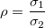
のようにします。片側検出力：
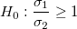
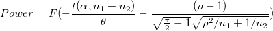
片側検出力：
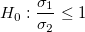
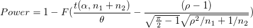
両側検出力
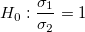
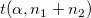
：自由度n1+n2-2でのt分布の上側パーセンタイル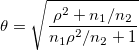
F は標準正規分布の累積分布関数を表しています。
のようにします。
片側検出力：
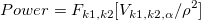
片側検出力：
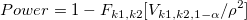
両側検出力
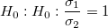
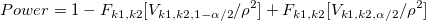
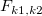
：自由度k1 と k2(k1 および k2 = n -1)の、F分布の分布関数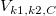
：自由度k1およびｋ2のF分布のためのCにおけに逆CDFを評価 ：有意水準
：有意水準
Originは、検出力等価で反復アルゴリズムを使用しています。各反復において、トライアルサンプルサイズのためのパワーが評価され、評価されたパワーが整数サンプルサイズに対応する値、および、目標値よりも大きい、最も近い到達したときに反復は停止されます。